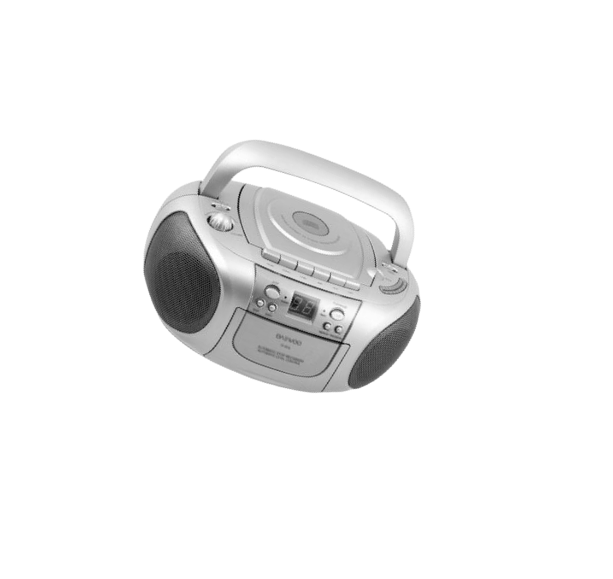
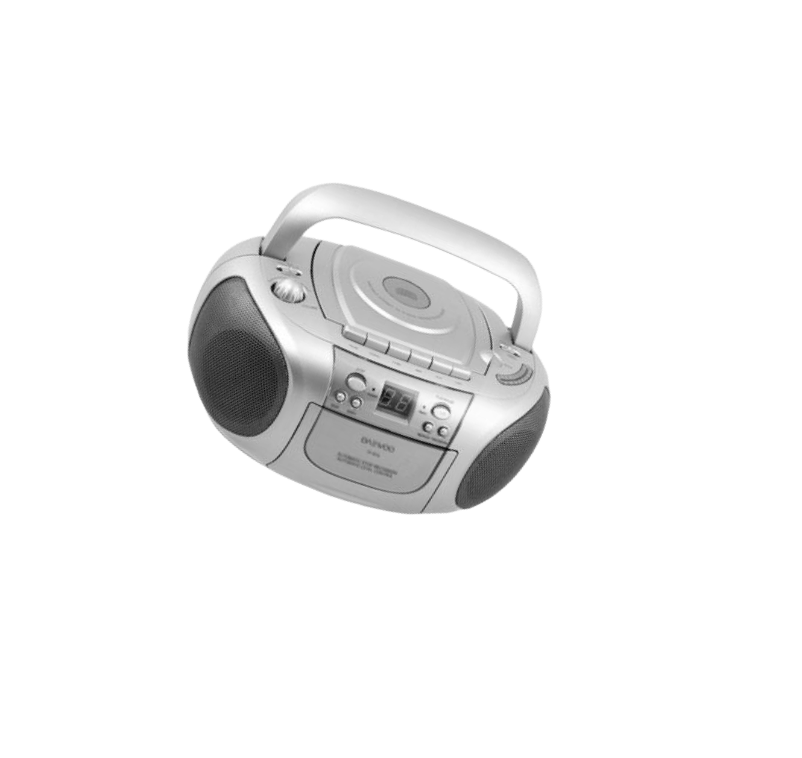

Телепередачи 90-х,
которые хочется
пересмотреть даже сейчас

 
 

В интеллектуальной игре сражались шесть команд, состоящих из школьника и его родственника. В первом и третьем турах нужно было поднимать таблички с правильными ответами. Во втором — из трубы падали кубики с буквами, из них потом надо было составить слово.
В финале встречались двое лучших игроков. Их задачей было составить как можно больше небольших слов из одного длинного. И в итоге победитель получал невероятные для ребёнка 90-х подарки: музыкальный центр, видеомагнитофон или другую технику, о которой можно было только мечтать.
«Звёздный час»

«Звёздный час»

«Звёздный час»

«Звёздный час»
Эта передача была чуть ли не единственной причиной, почему понедельник переставал быть невыносимым.
«Звёздный час»
«Звёздный час»
«Звёздный час»
«Звёздный час»
В интеллектуальной игре сражались шесть команд, состоящих из школьника и его родственника. В первом и третьем турах нужно было поднимать таблички с правильными ответами. Во втором — из трубы падали кубики с буквами, из них потом надо было составить слово.
В финале встречались двое лучших игроков. Их задачей было составить как можно больше небольших слов из одного длинного. И в итоге победитель получал невероятные для ребёнка 90-х подарки: музыкальный центр, видеомагнитофон или другую технику, о которой можно было только мечтать.
Советская и российская телепередача, придуманная для детей в 1983 году. Посвящена проблемам молодёжи. За время своего существования передача трансформировалась из тележурнала в ток-шоу. Здесь чуть ли не впервые на телевидении начали поднимать проблемы молодёжи на понятном ей языке.
Современным программам «До 16 и старше» явно проигрывает, телевидение продвинулось далеко вперёд. Но в ностальгических целях пересмотреть некоторые выпуски можно, например серию с участием Виктора Цоя. В 2001 году программа вышла в последний раз, а в августе закрылась.

«До 16 и старше»

«До 16 и старше»
«До 16 и старше»

«До 16 и старше»

«До 16 и старше»
«До 16 и старше»
«До 16 и старше»
«До 16 и старше»
Советская и российская телепередача, придуманная для детей в 1983 году. Посвящена проблемам молодёжи. За время своего существования передача трансформировалась из тележурнала в ток-шоу. Здесь чуть ли не впервые на телевидении начали поднимать проблемы молодёжи на понятном ей языке.
Современным программам «До 16 и старше» явно проигрывает, телевидение продвинулось далеко вперёд. Но в ностальгических целях пересмотреть некоторые выпуски можно, например серию с участием Виктора Цоя. В 2001 году программа вышла в последний раз, а в августе закрылась.
«Иван Демидов из «МузОбоз»»
«Музыкальное Обозрение» вёл Иван Демидов, неизменно предстающий перед зрителями в чёрных очках. В программе рассказывалось о модной музыке, и это была передача, не имеющая аналогов, — эдакое MTV, запертое в получасовые рамки «МузОбоза».
Телепрограмма представляет собой обзор самых ярких событий, произошедших в мире шоу-бизнеса за неделю, дополненный музыкальными клипами и интервью со звездами. В телешоу «МузОбоз» появляются как известные артисты, так и совсем молодые, делающие первые шаги на музыкальной сцене. В постоянной рубрике «Именинники недели» коллеги по сцене поздравляют музыкантов, отметивших день рождения.
01
«Лего-го!»
02
«Позвоните Кузе»
03
«Новая реальность»
04

«Каламбур»
05
«Любовь с первого взгляда»
06

«Бои Гладиаторов»
«Золотая лихорадка» — интеллектуальное телешоу, демонстрировавшееся на канале ОРТ с 8 октября 1997 по 21 ноября 1998 года. Повторялись выпуски с 2014 по 2016 год на канале «Вопросы и ответы». Автор и ведущий — Леонид Ярмольник. Игра состоит из трёх раундов. Формат заданий, состоящий в полном перечислении максимально возможного числа элементов заданого списка с ограничениями времени на размышление, напоминает игру в «города». Вопросы викторины затрагивали различные области деятельности человека: науку, искусство, культуру.
Эта игра не сразу всплывает в голове, когда начинаешь думать о шоу 90-х, однако память хорошо освежает главный приз — 1 кг золота. Ведущий перемещался внутри огромной клетки, пока игроки отвечали на вопросы. Примечательно, что программу закрыли из-за финансового кризиса.

Леонид Ярмольник из «Золотой лихорадки»